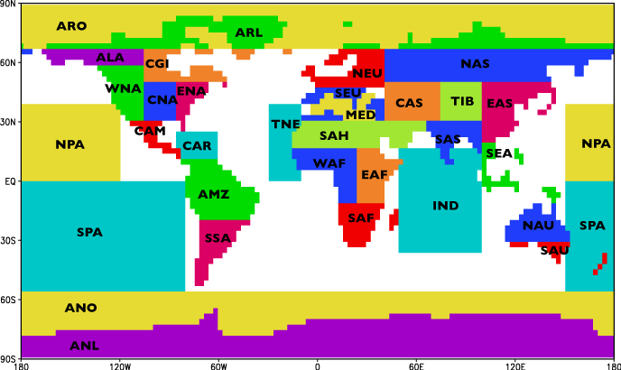

Regional Scatterplots
Future climate in world regions: an intercomparison of model-based projections for the new IPCC emissions scenarios
Background (Please read this first)</font>
This report was prepared at the request of the Task Group on Scenarios for Climate Impact Assessment (TGCIA)(1) and constitutes IPCC Supporting Material(2). It was reviewed by members of the Task Group and outside experts, made available at this site as a PDF file, and subsequently published by the Finnish Environment Institute.
The scatter diagrams described and presented on these pages depict projected changes in seasonal surface air temperature and precipitation for three 30-year periods (2010-2039, 2040-2069 and 2070-2099) relative to the baseline period 1961-1990 in 32 sub-continental scale regions (see below).
IMPORTANT NOTE (APRIL 2005): ERRORS IN CSIRO TEMPERATURE CHANGES - SEE SEPARATE PAGE

The climate changes have been simulated by seven coupled atmosphere-ocean general circulation models (AOGCMs; see Table 1 of the accompanying report), the greenhouse gas and aerosol forcing being inferred from the SRES emission scenarios A1FI, A2, B1 and B2. Responses to the A2 and B2 scenarios are based on AOGCM simulations; projections for other scenarios were mainly derived from available runs applying a pattern-scaling technique (for a description of the technique and its applicability, see section 3.2 of the report). As we have dealt with 32 regions, three projection periods and four seasons, there are 384 scatter diagrams altogether.
The scatter diagrams are designed to offer guidance to impacts analysts who wish to assess the likely range of future climate change in a region. The diagrams can be used to define the limits of temperature/ precipitation change to be employed in climate impact sensitivity studies. They may also assist in the selection of a representative set of model-based projections to be employed as scenarios. However, it is recommended that further study of the coupled-GCM outputs be undertaken to establish their suitability for application in regional impact studies, preferably in co-operation with experienced climatologists.
For example, one possible criterion for judging model suitability is its skill at reproducing present-day observed climate (see section 2 of the accompanying report). Confidence in a model is enhanced further if the model is able to capture regional phenomena such as the Asian monsoon, the El Niño – Southern Oscillation and seasonal ice and snowcover, which are important for many impact applications. Nevertheless, model performance varies widely at regional scale, and it should be remembered that a model that performs well in one region or for one variable might perform less well in another region or for a different variable. Moreover, even though a good simulation of present-day regional climate is an encouraging result, it is still no guarantee of reliable projections of climate change. General information on the performance of coupled-GCMs, including the seven models used in this exercise can be found in the report (see below).
Download Full Report 6.6MB (.pdf)
Ruosteenoja, K., T.R. Carter, K. Jylhä and H. Tuomenvirta, 2003: Future climate in world
regions: an intercomparison of model-based projections for the new IPCC emissions scenarios.
The Finnish Environment 644, Finnish Environment Institute, 83pp.
View Regional Scatter Diagrams
Acknowledgements
We are grateful to Dr. David Viner at the University of East Anglia and Drs. Francis Zwiers and
Slava Kharin at the Canadian Centre for Climate Modelling and Analysis for providing data from
AOGCM control simulations. Valuable comments were received from the following: E. Barrow,
M. Hulme, L. Mearns, J. Mitchell, T. Mitchell, C. Rosenzweig, R. Stouffer and T. Wigley. Financial
assistance for this work was provided by the Ministry for Foreign Affairs of Finland, the
Government of Canada and the Intergovernmental Panel for Climate Change Trust Fund.
(1) Forerunner of the Task Group on Data and Scenario Support for Impacts and Climate Analysis (TGICA).</a>
(2) Supporting material is defined in the Procedures for the Preparation, Review, Acceptance, Adoption, Approval, and Publication of IPCC Reports.